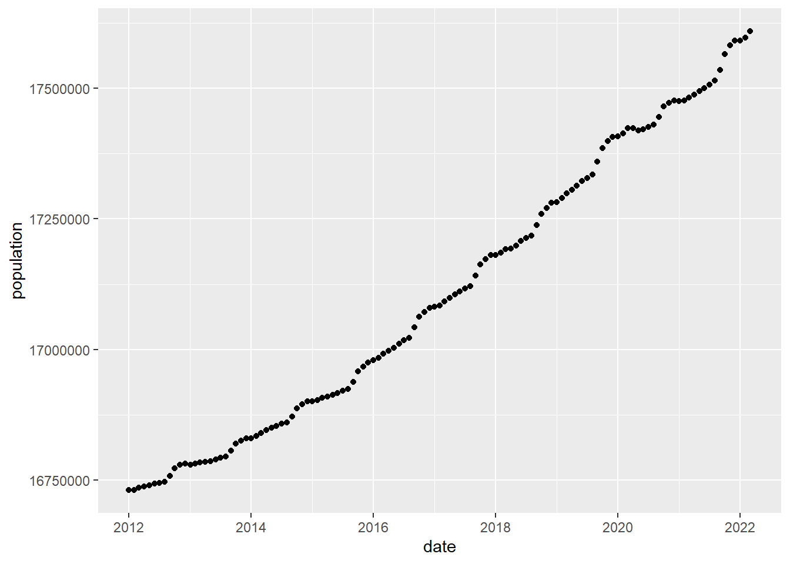
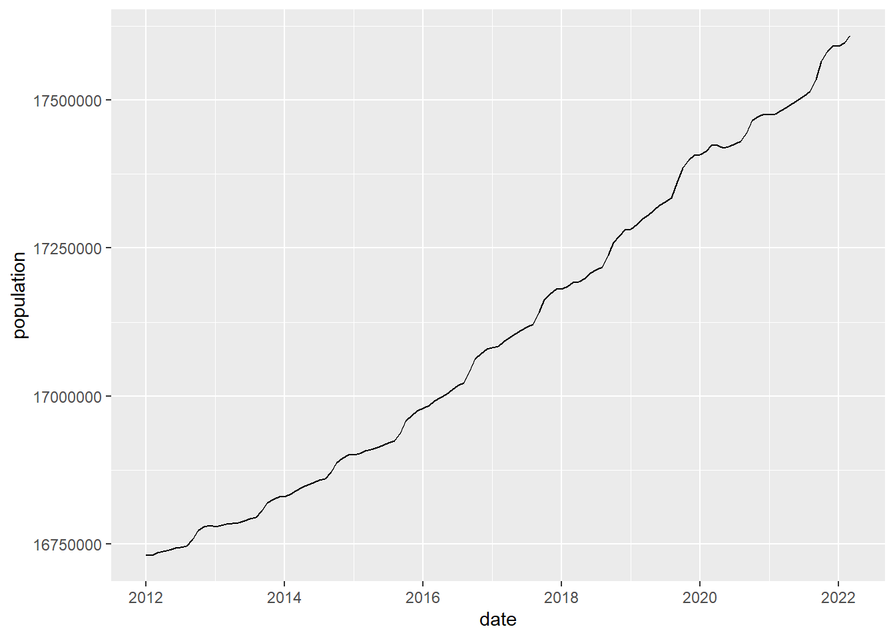
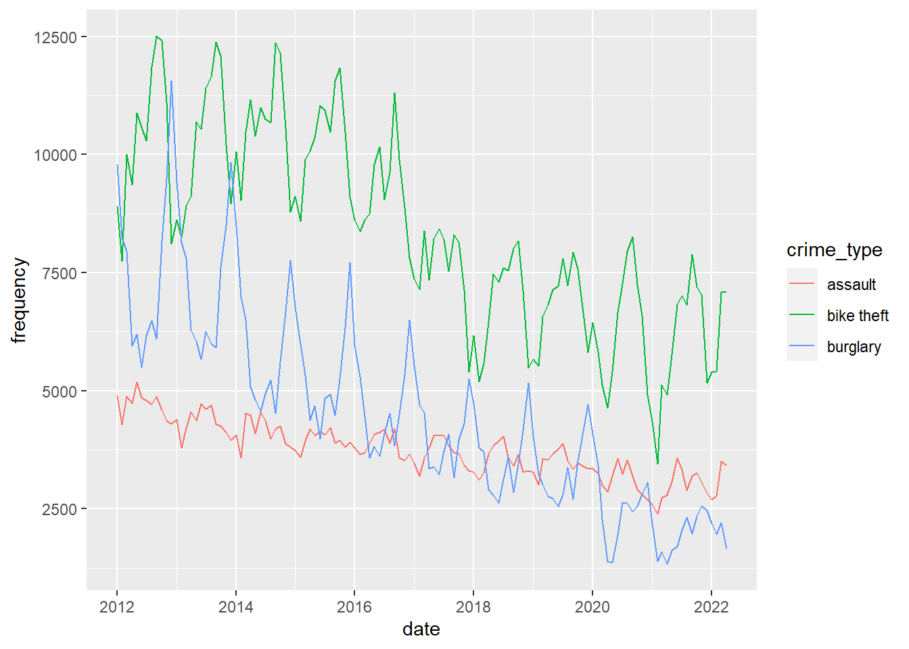
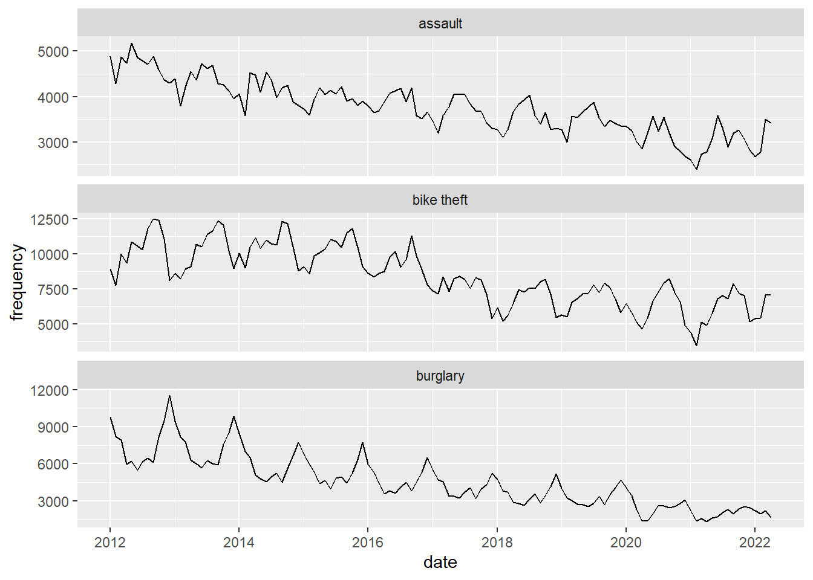
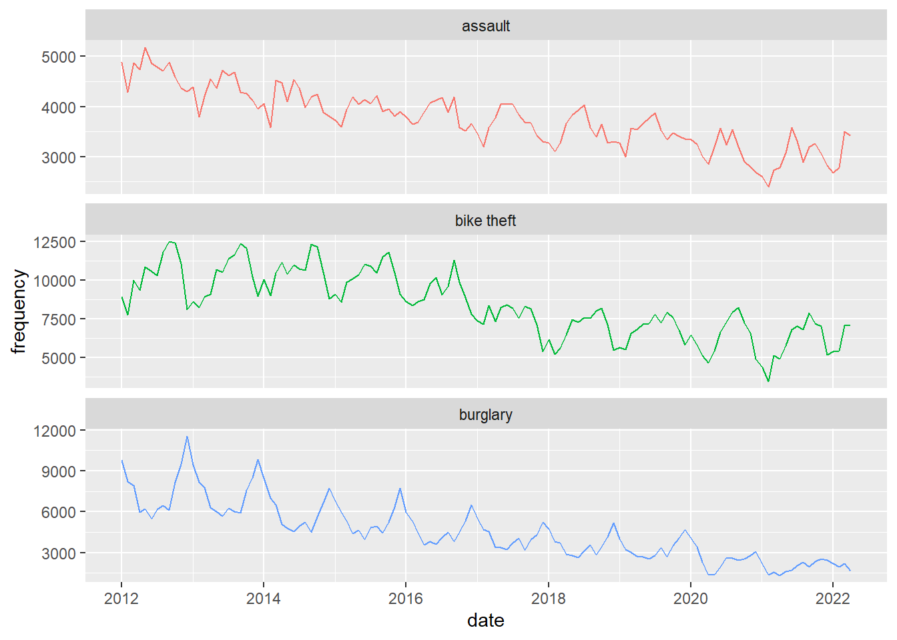

Below you find the materials Wim Bernasco prepared for the Tidy Tuesday workshop on May 24th 2022. Here is the original link to this workshop and the materials. You find links to two small datasets. One (crime.csv) contains the number of police recorded residential burglaries, bike thefts and assaults in the Netherlands per month between January 2012 and April 2022. The other (population.csv) contains the number of inhabitants of the Netherlands during the same period, per first day of the month. In the workshop he tried to make sense of long-term temporal trends in these crimes, and hopefully also make useful statements about how things changed when the COVID pandemic arrived around February 2020. He worked out eight steps in the analysis.
Acknowledgement: Franziska Yasrebi-de Kom corrected errors and provided fruitfull suggestions for improvement of the first draft.
8.2 Start-up
Create a new folder on the computer where you run R, and store the two datafiles crime.csv and residents.csv in the folder.
You will normally load libraries here at the top of your script, but in this example I will load libraries at the point where I need their functionality. This shows when and why they are needed.
If your project is reasonably small and all files (data, scripts, and output files) can be stored in a single folder without creating confusion, setting a working folder is a good idea. All reading from and writing to disk will be done from and to this folder.
setwd("X:/YYY/ZZZ") # for example: setwd("C:/Users/bernasco/crime_trends_NL")
Note: In this script I will use the new |> piping symbol. It is equivalent to %>% but has two advantages, which are
- (1) it is shorter (2 instead of 3 symbols), and
- (2) it does not require you to load a library, as it has been built into base R
8.3 Read both files from disk and assign each a name.
Any name will do, but I suggest “crime” and ” residents”. Read data using the read_csv function in package readr. read_csv has a few advantages over read.csv but the latter will also do.
read_csv is in the readr library, so we load readr first. I added tidyverse also already.
library(readr) # read_csv function
Warning: package 'readr' was built under R version 4.1.3
library(tidyverse)
Warning: package 'tidyverse' was built under R version 4.1.3
-- Attaching packages --------------------------------------- tidyverse 1.3.2 --
v ggplot2 3.4.0 v dplyr 1.1.0
v tibble 3.1.8 v stringr 1.5.0
v tidyr 1.3.0 v forcats 1.0.0
v purrr 1.0.1
Warning: package 'ggplot2' was built under R version 4.1.3
Warning: package 'tibble' was built under R version 4.1.3
Warning: package 'tidyr' was built under R version 4.1.3
Warning: package 'purrr' was built under R version 4.1.3
Warning: package 'dplyr' was built under R version 4.1.3
Warning: package 'stringr' was built under R version 4.1.3
Warning: package 'forcats' was built under R version 4.1.3
-- Conflicts ------------------------------------------ tidyverse_conflicts() --
x dplyr::filter() masks stats::filter()
x dplyr::lag() masks stats::lag()
Note: in the live workshop we stumbled upon an error caused by our assumption that “crimes.csv” and “population.csv” had dates coded with dashes (like in “2022-05-24”) but my Excel version had written it with slashes (like in “2022/05/24”). Verify that after reading the files, their ‘date’ column has type ‘date’, not type ‘character’. You can use glimpse to verify this.
Explore the structure of the files. How many rows (observations), how many columns (variables), what are the variable names? What are their types: Are they integers, characters, dates, factors, .? keys? First explore the crime data.How many observations and how many variables (rows and columns)?
crimes |>dim() # dim(crimes)
[1] 372 3
For glimpse, slice-sample and count, we need library dplyr library(dplyr). Display the names and types of the variables, and show values for the first few observations column-wise. Note: verify that column date has type ‘date’
# A tibble: 6 x 2
date population
<date> <dbl>
1 2012-01-01 16730348
2 2012-02-01 16731280
3 2012-03-01 16735690
4 2012-04-01 16737631
5 2012-05-01 16739764
6 2012-06-01 16742830
population |>slice_sample(n=10) |>head()
# A tibble: 6 x 2
date population
<date> <dbl>
1 2016-09-01 17042542
2 2019-09-01 17359352
3 2018-08-01 17217598
4 2019-08-01 17335151
5 2017-05-01 17104960
6 2014-02-01 16833919
8.5 Visualize (plot) population and crime development
Visualize (plot) the development of the population size of the Netherlands between January 2012 and April 2022, and do the same for the frequencies of residential burglary, bike theft and assault.The ggplot function is in the ggplot2 library.
library(ggplot2)
Plot population as a scatterplot.
population |>ggplot() +geom_point(mapping =aes(x = date, y = population))

# or as a line graph population |>ggplot() +geom_line(mapping =aes(x = date, y = population))

Keep it simple first. You can finetune later.Plot burglary frequencies
The seasonal pattern for assault shows peaks in spring (apr-jun). Plot the three crime types in a single graph and distinguish them by color.
crimes |>ggplot() +geom_line(aes(x = date, y = frequency, color = crime_type))

Plot them in separate panels.
crimes |>ggplot() +geom_line(aes(x = date, y = frequency)) +# scales = "free_y" allows each panel to have its own# Y-axis scalingfacet_wrap(facets ="crime_type", scales ="free_y", ncol =1)

I would not advise it, but you can combine panels and color (if you do, hide the legend to prevent redundancy)
crimes |>ggplot() +geom_line(aes(x = date, y = frequency, color = crime_type)) +facet_wrap(facets ="crime_type", scales ="free_y", ncol =1) +theme(legend.position="none")

8.6 Calculate corrected rate
Create a residential burglary rate by relating number of residential burglaries to the size of the population, and think about how you can adjust for different months having a different numbers of days (28-31). To do this, you will need to merge (join) the “crime” dataframe with the “residents” dataframe by year and month.
Merge crime and population by date (year and month).
crime_population <-# merge with crime type category labelsleft_join(crimes, population, by ="date")
To calculate the number of days in the month of a date, you can use the day_in_month function which is in the lubridate library. Divide monthly crime frequency by number of days in the month to obtain the daily crime frequency, and divide by 100,000 to obtain daily crime rates per 100,000 population.
Further, I multiply the result by mean days per month to obtain the MONTHLY crime rate, but this is arbitrary (daily, weekly, of annual rates would be fine as well)
library(lubridate)
Warning: package 'lubridate' was built under R version 4.1.3
Attaching package: 'lubridate'
The following objects are masked from 'package:base':
date, intersect, setdiff, union
crime_population_corrected <- crime_population |>mutate(# corrected for different month lengthsrate = frequency /days_in_month(date) * (365.25/12) / (population /100000))
8.7 Visualize development of corrected crime rates
crime_population_corrected |># select observations with NA (missing) values on 'rate'filter(is.na(rate))
# A tibble: 3 x 5
date frequency crime_type population rate
<date> <dbl> <chr> <dbl> <dbl>
1 2022-04-01 1645 burglary NA NA
2 2022-04-01 7096 bike theft NA NA
3 2022-04-01 3416 assault NA NA
Aha! The population data of April 2022 were not yet online! This means we have valid data on both crime and population Jan 2012 to March 2022.
8.8 Crime before and after covid
What can we say about the development of crime since February 2020, relative to the developments between 2012 and 2020? How can you quantify this with the data at hand?
Let’s look at burglary and start with making a plot that highlights the distinction between the periods before and during the pandemic.
First we create a new variable/column that contains an indicator for whether the month is a pandemic month or not.
Define the date the pandemic started (a single number of the type ‘date’)
covid_start <-as_date("2020-02-01")
Note: The expression: date >= covid_start returns TRUE (1) for ‘covid_start’ and all later dates, and returns FALSE (0) for all dates before ‘covid_start’. The labels parameter assigns ‘before’ to 0 and ‘during’ to 1
We could just add a vertical line at the month that the pandemic started (February 2022)
crime_population_corrected_covid |>filter(crime_type =="burglary") |>ggplot() +geom_line(aes(x=date, y=rate)) +# add a red vertical line at given point on X-axisgeom_vline(xintercept = covid_start, color="red")
Note that there is a ‘hole’ in de line graphs between January 2020 and February 2020. This is because we are actually drawing two separate line graphs here, one ending Jan 2022 and one starting Feb 2022. When we create a line graph, we drawing an individual point graph and then connect consecutive points with lines. So there really is nothing between Jan 2020 and Feb 2020.
As we think of time as continuous (by day, or even hour), we may want to create a ‘before covid’ line that continues to Feb 2020.One way to do this is to explicitly draw two line graphs in the same plot. As you see this quickly becomes complicated ….
Note: I used “#F8766D” and “#00BFC4” to get the same colors that ggplot uses by default when there are two categories in a discrete variable
Now let us quantify the trends. We first calculate annual rates as we are presently not interested in the seasonal variations.
annual_rates_changes <- crime_population_corrected |># create a variable indicating the yearmutate(year =year(date)) |># select only years 2012-2021 because we have not full 2022 datafilter(year <2022) |># for each year and crime type, calculate annual crime rategroup_by(year, crime_type) |>summarize(annual_rate =sum(rate)) |># Now calculate relative change: # By what proportion does this year's rate differ# from previous year's rate?# We do this for each crime type separatelygroup_by(crime_type) |># sort by year arrange(year) |># Copy last year's ratemutate(lag_annual_rate =lag(annual_rate)) |># Relative change# See, e.g. https://www.youtube.com/watch?v=muAkepkjpZImutate(annual_change = ((annual_rate - lag_annual_rate) / lag_annual_rate))
`summarise()` has grouped output by 'year'. You can override using the
`.groups` argument.
Just to check that what you did generates the intended result: lag_annual_rate(2015) == annual_rate(2014) lag_annual_rate(2014) == annual_rate(2013) lag_annual_rate(2013) == annual_rate(2012) lag_annual_rate(2012) == NA (because annual_rate(2011) is unknown)
`summarise()` has grouped output by 'crime_type'. You can override using the
`.groups` argument.
# A tibble: 6 x 3
# Groups: crime_type [3]
crime_type covid mean_change
<chr> <fct> <dbl>
1 assault before -0.0463
2 assault during -0.0799
3 bike theft before -0.0587
4 bike theft during -0.0718
5 burglary before -0.116
6 burglary during -0.233
8.9 Do anything else with the data that you find fun or seems
To make senseYou can see that there is an overall decline for each crime type (mean_change is always negative) and the decline is more pronounced (mean_change is more negative) during the pandemic than before the pandemic, in particular for assault and burglary.
For more rigorous statistical tests, we would need to dive into time series analysis.